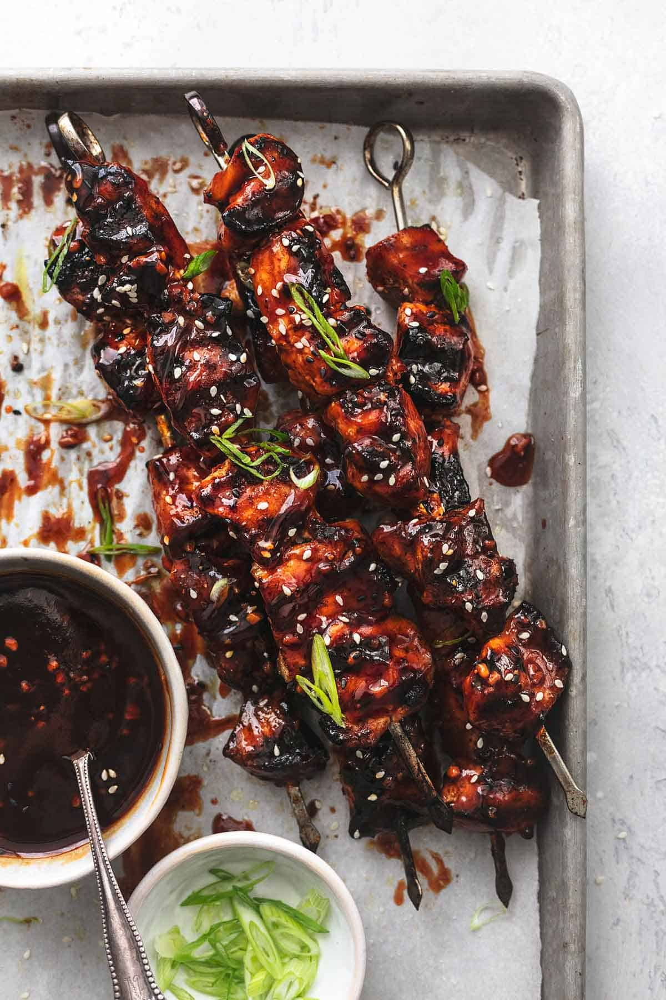

Korean BBQ

Description
Korean barbecue (Korean: 고기구이, gogi-gui, 'meat roast') is a popular method in Korean cuisine of grilling meat, typically beef, pork or chicken. Such dishes are often prepared on gas or charcoal grills built into the dining table itself.
- 1 ½ pounds boneless skinless chicken breasts - cut into 1.5 inch pieces
- salt and pepper
- 1 teaspoon Asian five spice - optional
- 3 green onions - finely chopped
- steamed rice or cooked noodles for serving - optional
Korean BBQ Sauce
- ½ cup low sodium soy sauce
- ⅓ cup brown sugar
- 4 tablespoons rice vinegar
- 2 tablespoons toasted sesame oil
- 1 tablespoon sriracha sauce - or 1 teaspoon crushed red pepper flakes
- 1 tablespoon minced garlic
- 2 tablespoons cold water + 2 teaspoons corn starch
Steps:
Prepare the bbq sauce
- In a medium sauce pan over medium-high heat stir together soy sauce, brown sugar, rice vinegar, sesame oil, sriracha, and garlic. Bring to a boil.
- In a small bowl stir together cold water and corn starch til dissolved. Stir into boiling sauce.
- Remove from heat and divide between two bowls. Reserve one bowl for serving later.
Prepare the chicken
- Skewer chicken onto metal or soaked wooden skewers.
- Season chicken pieces with salt and pepper to taste, and Asian five spice if you have it.
- Brush chicken all over with the Korean bbq sauce (from one bowl - remember to reserve one bowl for serving).
- Grill over medium heat 8-10 minutes turning periodically and brushing with additional bbq sauce after each turn.
- Serve over rice or noodles with reserved sauce and garnish with green onions.